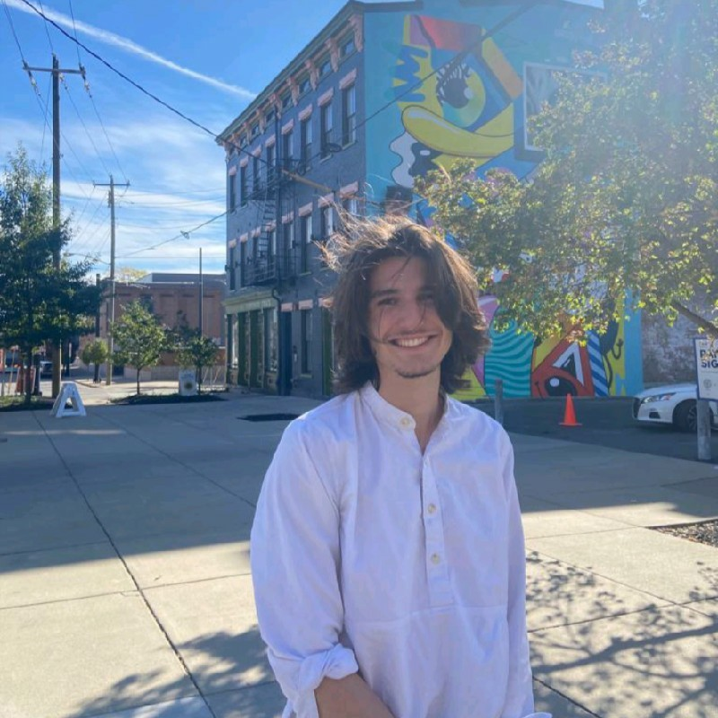

|

|
I'm a final year student at Trinity College Dublin, passionate about physics, mathematics, programming, problem-solving, and finance and banking.
I am a currently working on my Capstone in Lie Algebras and Particle Physics, which involves me reviewing Howard Georgie's work, and several review papers.
I'm interested in getting involved with the financial world, and have been involved this year with the Trinity Student Managed Fund. I'm a naturally analytical and intuitive thinker, and I love puzzles, problems and technical projects.
|